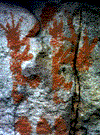

Dieser Artikel wurde ursprünglich im April 1997 in der Zeitschrift Discover veröffentlicht, als Aprilscherz. Bitte verwenden Sie ihn daher nicht in einer Hausarbeit, wie es ein unglücklicher Fall tat, der sich nach Erhalt einer Nichtbestehensnote entrüstet an mich per E-Mail wandte. Zurück zu meiner Webseite über diesen Artikel.
Und eine Eins und eine . . .äh, äh . . .
Die bedeutendste Entdeckung in der Karriere von Oscar Todkopf war völlig zufällig. Im letzten April war der Paläontologe der Hindenburg-Universität auf einer Wanderung im Neandertal in Deutschland, als er auf einem Pfad über etwas stolperte. Ein paar schnelle Grabungen enthüllten das Hindernis als die Spitze eines Mammutszahns. Doch erst einige Wochen später, als der gesamte Zahn ausgegraben und datiert wurde, erkannte Todkopf die Bedeutung seiner Funde. Er glaubt, der Zahn sei ein neandertalisches Musikinstrument gewesen. Todkopf nennt es eine neandertalische „Tuba". Wie die im letzten Jahr in Slowenien entdeckte Knochenflöte geht die 50.000 Jahre alte Tuba der Anwesenheit anatomisch moderner Menschen in Europa voraus.
Sechzehn sorgfältig ausgerichtete Löcher zieren die Oberfläche des sechsfuß langen Stoßzahns. „Ich denke, ein neandertaler Meisterhandwerker muss einen Steinbohrer verwendet haben, um den Stoßzahn zu hohlen und die Löcher zu schlagen", sagt Todkopf. Die Anzahl der Löcher, so sagt er, deutet darauf hin, dass Neandertaler eine Oktavskala verwendeten.
Todkopf entdeckte zudem die Überreste von mindestens drei weiteren Instrumenten. Eines ähnelt einer Dudelsackpfeife. Obwohl der „Sack"-Teil vor langer Zeit zerfiel, hinterließ er eine Proteinspur im Gestein. Die Analyse deutet darauf hin, dass er wahrscheinlich aus der Blase eines großen Tieres, möglicherweise eines Wollnashorns, gefertigt wurde und einst mit einigen langen, dünnen Knochen verbunden war, die um den Abdruck herum angeordnet waren. Todkopf fand zudem ein zartes Knochen-„Dreieck" und eine Sammlung von ausgehöhlten Knochen verschiedener Längen.
"Ich denke, sie waren Teil eines Instruments, das einem Xylophon ähnlich war – ich nenne es gerne Xylobon", sagt Todkopf. "Ein Kollege glaubt jedoch, dass Neandertaler die Knochen an Höhleneingängen wie große Windspiele aufgehängt haben. Was die Dudelsäcke betrifft, so überrascht es mich nicht, dass wir den Neandertalern dafür zu danken haben." Todkopf glaubt, sie hätten die Pfeifen mit der Nase gespielt. Die Knochen, die in der Nähe des Blasenfarbstoffs gefunden wurden, sind mit hölzernen Stopfen mit hohlen Zentren versehen. Die Stopfen, so sagt Todkopf, passen perfekt in die Nasenhöhlen eines Neandertaler-Schädels, der an der Fundstelle gefunden wurde. "Diese Kerle hatten Nasenhöhlen so groß wie Bierhallen", sagt er.

| Hören Sie sich eine Demonstration an, wie die Neandertal-Tuba möglicherweise geklungen hat! (210 KB) |
Todkopf spekuliert, dass die Vorliebe der Neandertaler für Musik erklären könnte, warum sie vor etwa 30.000 Jahren ausstarben. „Vielleicht haben ihre Musikstücke alle Beutetiere vertrieben. Sie hätten überall ein schreckliches Getöse oompah-pahend erzeugt. Das Neandertal war voller Musik."
Wie die Briefe, die in der Juli-Ausgabe von Discover erschienen sind, zeigen, haben unsere Leser sich erneut als gute Sportler erwiesen.
Juli 1997 - Briefe: April ist der grausamste Monat
ICH MÖCHTE DISCOVER DAFÜR DANKEN,
dass es weiterhin Mythen aufdeckt und widerlegt, die als Fakten gelehrt werden, wie etwa im Abschnitt „Breakthroughs" der April-Ausgabe.
Als langjähriger Saxophonspieler wurde ich immer gelehrt, dass Adolphe Sax der Entdecker/Erfinder des Saxophons war. Die Höhlenmalerei des Neandertalers, insbesondere die Figur links, zeigt offensichtlich ein Saxophon (scheint ein Tenor zu sein), das gespielt wird, was darauf hindeutet, dass Herr Sax möglicherweise Ideen vom frühen Menschen gestohlen hat.
Nochmals: Worte können uns in dieser Angelegenheit nicht gerade richten.
LARRY W. BADER
Columbia, Miss.
P.S. 1997 wurde als das 150. Jubiläum der Erfindung des Saxophons gefeiert! Ha!
ICH WAR VON DER WUNDERBAREN
Entdeckung von Herrn Todkopf fasziniert. Ich sprach mit Herrn Todkopf, und
er erzählte mir von der Fundstelle eines zusätzlichen Gegenstands.
Der Gegenstand war ein einfaches AM-Radio. Es war offensichtlich
von einem primitiven Solarkollektor betrieben. Herr Todkopf
spekuliert, dass das Radio verwendet wurde, um die Musik
dieser erstaunlichen Gesellschaft von Neandertalern zu übertragen.
BOB NORTHRUP
Raleigh, N.C.
ICH BIN FREU, TODIE ZU SEHEN
(wie wir ihn in der siebten Klasse nannten) befindet sich in einer seriöseren Forschungsrichtung. Ich fand seine Monographien über Mousterian-"Frijole-Bänder" immer etwas peinlich. Frohe Feiertage.
DORIS BRODY
Bethesda, Md.
AL HIRSHFELD HAT ZU SEINEM NAMEN EINE KLEINE ZAHLE
hinzugefügt, um anzudeuten, wie oft er den Namen seiner Tochter in seinen Illustrationen verwendet hat.
Ich schlage vor, dass DISCOVER dies ebenfalls auf den Titelseiten seiner April-Ausgaben tut.
JONATHAN MACY
Boston
© Copyright 1999 The Walt Disney Company. Zurück zur Homepage.